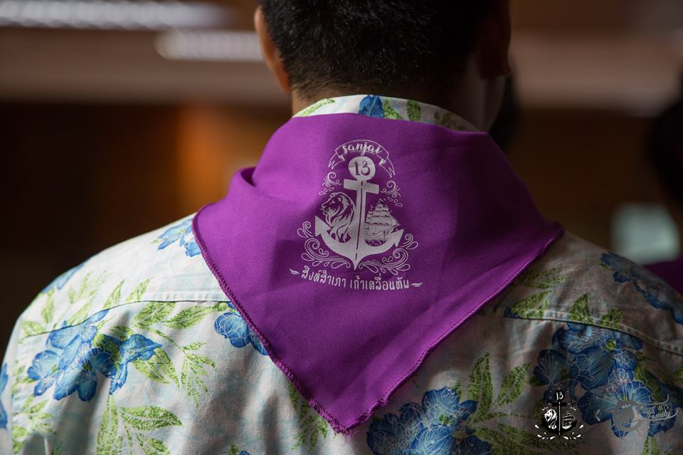
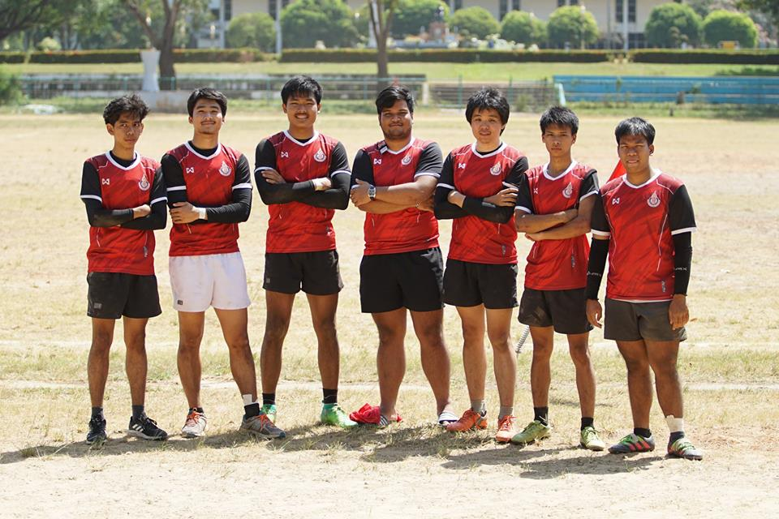
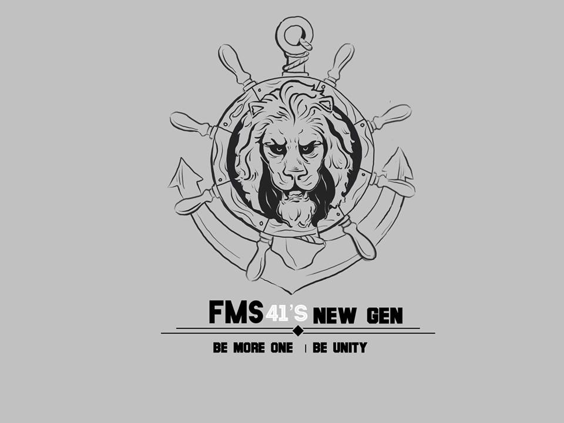

Welcome to the blog of Earth

San-Jai 13
14 August 2017San-Jai 13 of Management science faculty,Prince of Songkla University.
The first time that I become to staff...

Rugby FMS-league
10 February 2018Rugby football is my favorite sport,in addition Finance team is like my family for now....

SAMO 41
8 March 2018Finally,I become to President of sport as I Wished.
but this just start-point of my dream....